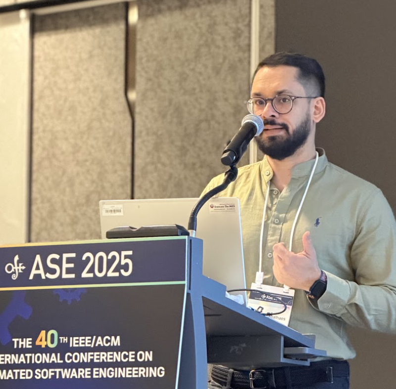

Sobre
Docente na Universidade Federal Rural de Pernambuco. Possui graduação em Sistemas de Informação pela Universidade Federal Rural de Pernambuco (2012), Mestrado em Ciências da Computação pela Universidade Federal de Pernambuco (2015) e doutorado em Ciências da Computação pela Universidade Federal de Pernambuco/Western University (2020). Profissionalmente, atuou na área acadêmica como docente na CESAR School, Unisãomiguel, FATEC-PE e Tera Treinamentos, sendo todas as experiências em disciplinas de Tecnologia da Informação. Em termos de indústria de software, possui experiência como Engenheiro de Testes (QA) na Liferay Inc. e CESAR.